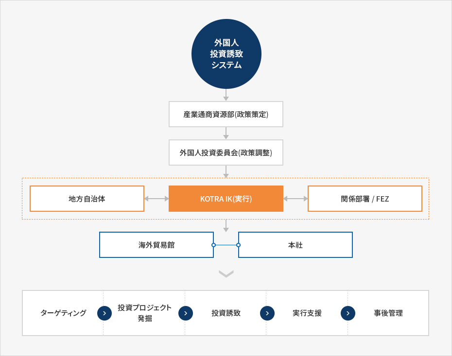

Invest Korea
- Home
- IKサービス
- IKの紹介
- Invest Korea
Invest KOREA
外国企業の韓国進出の成功を支援するためにKOTRA(大韓貿易投資振興公社)内に設立された国家投資誘致機関です。Invest KOREAは韓国の投資環境を海外に広報する役割を遂行し、外国企業を対象に投資相談から投資申告、企業設立、韓国での事業活動支援及び経営上の苦情事項の解決などの包括的なサービスを提供します。
韓国の外国人直接投資誘致システム
外国人投資分野に豊富な知識と経験を保有するKOTRAの職員と専門家グループ、政府関連部処及び機関から派遣された公務員、様々な分野の民間専門家で構成されており、36のKOTRA海外投資拠点貿易館(Korea Business Center)と緊密な業務協力体制を整えています。
Invest KOREAは外国人投資委員会(Foreign Investment Committee)と産業通商資源部が樹立した外国人投資関連の政府政策を遂行します。


外国人投 資誘致システム
- 產業通商資源部(政策策定)
- 外国人投資委員会(政策調整)
- 地方自治体 ↔ KOTRA IK(実行) ↔ 関係部署 / FEZ
- 海外貿易館, 本社
-
- ターゲティング
- 投資プロジ ェクト発掘
- 投資誘致
- 美行支援
- 事後管理

投資拠点貿易館
Invest KOREAは海外投資誘致業務を活性化するために、 36の貿易館に64人の投資誘致担当官を配置しています。海外投資拠点貿易館は、海外の潜在的な投資家とコンタクトする窓口で、潜在的投資家を対象に韓国の投資関連情報を提供し、国家IRの開催などの投資誘致活動を展開します。
沿革
-
2015
- 1月 - 外国企業苦情処理団を、 外国人投資オンブズマンの直轄体制に変更
-
2012
- 2月 - オンブズマンの直轄組織として、 総合行政支援センターを編成
-
2010
- 8月 - Invest KOREAのミッションに研究部門を追加
-
2009
- 世界銀行傘下の外国人投資諮問機関 「FIAS（Foreign Investment Advisory Service)」に よる投資誘致ホームページ優秀事例 （APEC加盟国のうち第1位）に選定
-
2006
- 11月 - 外国企業創業支援研究センターの Invest Korea Plazaが開館
-
2003
- 12月 - 外国人投資支援センター(KISC) → Invest KOREAとして再発足
-
1999
- 10月 - 外国人投資オンブズマン（大統領任命)事務所が開所
-
1998
- 7月 - KOTRA 内に外国人投資支援センター （Korea Investment Service Center）を設立
- 4月 - 韓国政府、KOTRAを国家投資誘致専門機関に指定
-
1995
- 8月 - KOTRA に外国人投資誘致支援機能を追加